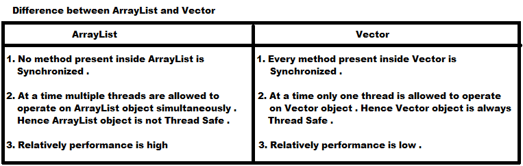

List Interface is implemented by ArrayList, LinkedList, Vector and Stack classes.
- List
- ArrayList
- LinkedList
- Vector
- Stack
ArrayList
- The underlying data structure for ArrayList is Resizable or Growable Array .
- Duplicate Objects are allowed .
- Insertion order will preserved .
- Heterogeneous objects are allowed .
- 'Null' insertion is possible .
Constructors:
- ArrayList al = new ArrayList();
Creates an empty ArrayList object with default initial capacity 10 .
- If ArrayList reaches max capacity a new ArrayList object will be created with
- new capacity = (current capacity * 3/2) + 1
- ArrayList l = new ArrayList(int initialCapacity);
Creates an empty ArrayList object with specified initial capcity .
- ArrayList l = new ArrayList(Collection c);
Creates an equivalent ArrayList object for the given Collection object .
- This constructor meant for inter-conversion between Collection objects .
- Usually we can use Collection to hold and transfer data (Objects) from one location to another location .
- To provide support for this requirement every Collection class implements Serializable and Cloneable interfaces .
- ArrayList and Vector classes implements RandomAccess interfaces . So that we can access any random element with the same speed .
- Hence ArrayList is best suitable if our frequent operation is retrieval operation .
- RandomAccess interface present in java.util package and doesn't contain any methods . Hence it is Marker interface .

- How to get Synchronized version of ArrayList object ?
- By default ArrayList object is non-synchronized . But we can get synchronized version of ArrayList object by using following methods of Collections class.
- public static List synchronizedList(List l)
Example: ArrayList al = new ArrayList();
List l = Collections.synchronizedList(al);
- Similarly we can get synchronized version of Set and Map objects by using the following methods .
- public static Set synchronizedSet(Set s)
- public static Map synchronizedMap(Map m)
- ArrayList is the best choice if we want to perform retrieval operation frequently .
- ArrayList is the worst choice if our frequent operation is insertion or deletion in the middle because it is required several shift operations internally .